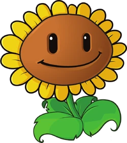
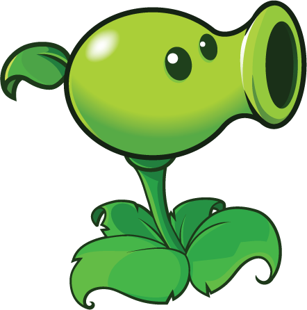

Tutorial

O Plants Vs Zombies é extremamente fácil de jogar e não tem limitações, podendos ser jogado por
qualquer usuário
devido a sua mêcanica de jogo ser muito simples(caso não tenha lido sobre o jogo recomendamos
que acesse a home).
Em todas as fases começaremos com uma quantidade fixa de sol  (a moeda usada para comprar plantas durante a partida)
recebendo 50 sol de início, exceto na primeira fase, que começaremos com 150.
(a moeda usada para comprar plantas durante a partida)
recebendo 50 sol de início, exceto na primeira fase, que começaremos com 150.
Ao longo do tempo vão
caindo sois e você terá que clicar neles
para coletalos(cada sol dará 25 pontos).


Para começar devemos plantar um girassol 
para produzirmos mais sol (elas são a principal planta e
devemos protege-lás a todo custo)
a segunda planta irá variar dependendo do seu nivel, mas no começo e durante um bom tempo
plantaremos a
disparervilha, 
que sera de grande ajuda para nos proger dos zumbis.
O jogo será basicamente assim, iremos construir mais girassóis até completarmos umas duas
fileiras
e, enquanto isso, iremos
colocar mais plantas para nos defendermos.
Imagem sobre o jogo nas fases iniciais